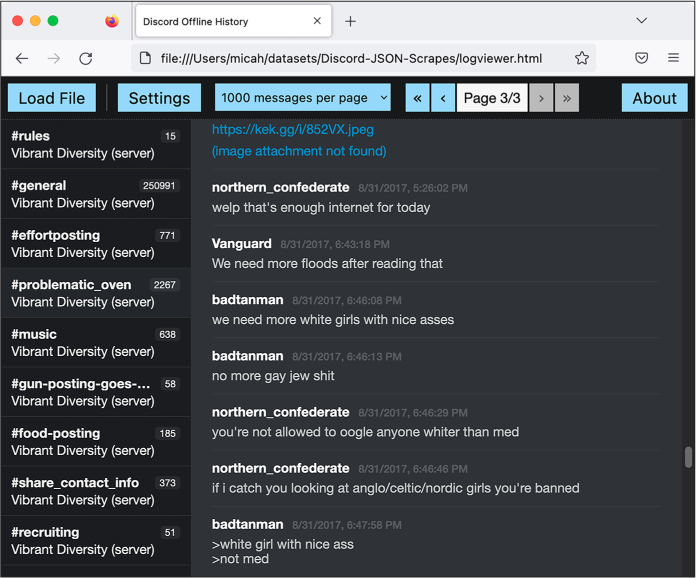
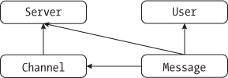
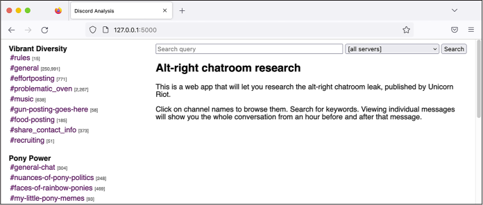
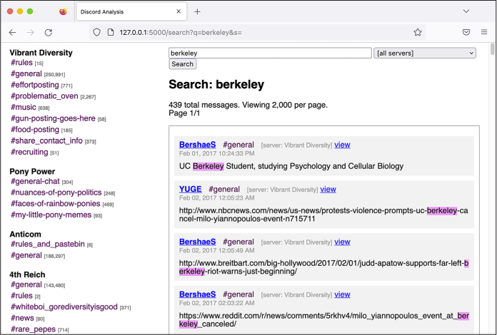
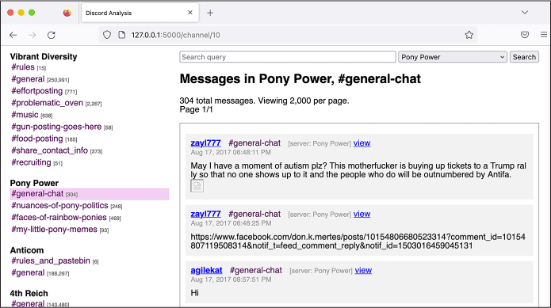

On August 12, James Alex Fields Jr., described by his high school history teacher as “deeply into Adolf Hitler and white supremacy,” drove a car into a group of counterprotesters, murdering 32-year-old Heather Heyer and injuring 19 other people. Earlier in the event, Fields was seen marching with a Vanguard America shield. That same day, a group of six white men followed 20-year-old Black special ed assistant teacher DeAndre Harris into a parking garage and beat him with poles and metal pipes, an attack that was caught on film and posted to the internet. In response to the racist violence, Trump famously said that there were “very fine people on both sides.”
The Unite the Right rally, like much of the American fascist movement’s activism during the 2017–2021 Trump presidency, was largely organized online using Discord, a group chat platform designed for gamers. In Discord, users join servers, a group of chatrooms, or a channel, a single chatroom. Each channel covers different topics. Fascists created Discord servers for their regional hate groups, as well as for projects like organizing Unite the Right.
An antifascist infiltrator gained access to the server used to organize Unite the Right, called Charlottesville 2.0, as well as many other servers used by fascists at the time. They then leaked the chat logs to Chris Schiano and Dan Feidt, journalists working with the independent nonprofit news collective Unicorn Riot. The leak took the form of screenshots from the Discord app, large JSON files containing thousands of messages, and audio recordings from voice meetings.
In this chapter, I describe how the JSON chat log files were structured and how I went about analyzing them, using techniques covered in Chapter 11. I’ll describe the custom app that I wrote to investigate this dataset and explain how I used it to investigate a Discord server called Pony Power, whose members doxed their political enemies. You’ll also learn the inside story of DiscordLeaks, Unicorn Riot’s public searchable archive based on my app, which contains millions of chat messages from far-right Discord servers. Finally, I discuss a major hack of the American neo-Nazi organization Patriot Front that took place four and a half years after the Charlottesville rally. This hack included chat logs from RocketChat, a self-hosted system that Unicorn Riot also hosts in DiscordLeaks.
Like my reporting on the AFLDS dataset, this case study is an example of journalism with real-world impact. My work, along with that of Unicorn Riot, antifascist infiltrators, and other anonymous developers, helped lead to a court settlement against the most notorious American white supremacist leaders and organizations, resulting in over $25 million worth of damages. I hope that this case study will inspire your own work on datasets of structured chat logs, should you obtain them in the future. With the rise of remote work and the increasing popularity of chat platforms like Discord, Slack, and RocketChat, this type of leak is only getting more common.
I’ll start with a brief description of how these chat logs were leaked.
How Antifascists Infiltrated Neo-Nazi Discord Servers
Unicorn Riot reporters covered the Unite the Right gathering on the ground in Charlottesville. In the following days, the collective announced that it had received anonymously leaked chat logs from the far-right groups that took part in the rally, and particularly from the Charlottesville 2.0 Discord server. It began publishing articles based on these leaks, showing evidence of premeditated plans for violence, memes about hitting protesters with cars, and posts made after the event celebrating Heather Heyer’s murder. It also published ZIP files containing thousands of screenshots from the infiltrated Discord servers. Researchers, both amateur and professional, immediately began correlating breadcrumbs from these chat logs with photos and videos of the event that were posted to social media to identify specific fascist activists.
Alongside Charlottesville 2.0, other leaked fascist Discord servers had names like Vibrant Diversity, Ethnoserver, Safe Space 3, and 4th Reich. Some servers only had a few dozen users, while others had over a thousand. The most active server at the time, Vibrant Diversity, included a channel called #problematic_oven, where users shared racist memes. The 4th Reich server included a #rare_hitlers channel, where users shared vintage propaganda from Nazi Germany.
Once the reporting of Unicorn Riot and others had made it clear to Discord that Nazis were relying on its service, the chat platform shut down many far-right chat servers and accounts. “Discord’s mission is to bring people together around gaming. We’re about positivity and inclusivity. Not hate. Not violence,” the company said in a statement. “We will continue to take action against white supremacy, nazi ideology, and all forms of hate.” Shutting down individual servers and accounts didn’t work, though; fascists simply created new accounts and set up new chat servers. Just as quickly, antifascists infiltrated those new servers and continued to leak chat logs to Unicorn Riot.
Fascists started spreading conspiracy theories that there were no infiltrators but that Discord itself was selling their chat logs to the Southern Poverty Law Center, a nonprofit that monitors hate groups. “The Charlottesville planning server was leaked, even though it was highly secure and no one could figure out who could have leaked it,” Andrew Anglin, founder of the notorious neo-Nazi website the Daily Stormer, wrote in an April 2018 blog post. “Since then, servers have been repeatedly leaked. People have been doxed without being able to figure out how they were doxed. Repeatedly and consistently, I have been given reason to believe that these are not Discord ‘leaks,’ but data being bought by our enemies.” This wasn’t true, of course. Anglin provided no evidence for the claim, Discord’s privacy policy promises that it doesn’t sell user data, and we know exactly how the data was leaked: antifascists were invited into the group by pretending to be racists.
A few weeks after Unite the Right, I got a hold of some of these chat logs myself and began to analyze them.
Analyzing Leaked Chat Logs
In late August of 2017, after Unicorn Riot had started publishing articles based on leaked chats, someone from the collective asked me if I’d like to cover the fascist chat logs for The Intercept. While journalism can be competitive, with each newsroom racing to publish breaking news first without getting scooped, the opposite is often true when it comes to complicated datasets. When it’s clear that there’s no way that a single newsroom has the resources to discover all of the revelations in a dataset, it only makes sense to bring in other newsrooms and share access to the data. This sort of collaboration helps everyone because different newsrooms have different audiences, and it makes real-world impact from the reporting more likely.
My Unicorn Riot contact sent me a ZIP file full of JSON files and screenshots of Discord chats that covered several Discord servers. The JSON files contained more complete logs of everything posted to these chatrooms, while the screenshots captured only specific conversations. While screenshots are initially simpler to use because you don’t need to write any code or use special tools to read them, having the chat logs in a structured data format like JSON is much more useful in the long run. The best way to peruse screenshots of chats is to open individual images, read them one at a time, take note of the filenames that contain interesting content, and refer back to them as needed. This quickly becomes unwieldy when you’re dealing with thousands of screenshots.
I started digging into the JSON files to see what I was dealing with.
Specifically, I used the handy command line tool jq to figure out exactly how this data
was structured in order to find the lists of users and channels and read
the messages in each channel.
NOTE Besides manually reading screenshots and taking notes, another option would have been to index the screenshots in software like Aleph, which you used in Chapter 5. Aleph would then perform OCR on the images, extracting their text and enabling me to search them for keywords. This might be helpful in locating specific messages, but in the end, it’s still not as useful as structured data. If I were dealing with this data today and only had screenshots without access to JSON data, I would definitely rely on Aleph.
Making JSON Files Readable
Each JSON file within the ZIP file sent by my source contained the entire archive of chat logs from a given Discord server. For example, one 29MB JSON file was called VibrantDiversityComplete-Sept5at327PM. For the purposes of this book, I’ve renamed it VibrantDiversity.json to make the following examples easier to read.
When I opened this file in a text editor, its contents looked like this:
{"meta":{"users":{"231148326249037824":{"name":"D'Marcus Liebowitz"},"232213403974893569":{"nam
e":"northern_confederate"},"279620004641767424":{"name":"☇Unlimited Power☇"},"23338059623405977
6":{"name":"OrwellHuxley"},"289851780521787392":{"name":"badtanman"},"337421867700715524":{"nam
e":"spadegunner"},"315936522656546818":{"name":"erz1871"},"122932975724789761":{"name":"Archer"
},"201547638129164290":{"name":"SLUG2_"},"288899711929286667":{"name":"million plus"},"25019824
--snip--
This block of data is not very human-readable. As you learned in
Chapter 11, it’s much easier to read JSON
data that’s been reformatted using line breaks, indentation, and syntax
highlighting. Using the jq
command, I formatted it and added syntax highlighting in my terminal
like so:
micah@trapdoor Discord-JSON-Scrapes % cat VibrantDiversity.json | jq
{
"meta": {
"users": {
"231148326249037824": {
"name": "D'Marcus Liebowitz"
},
"232213403974893569": {
"name": "northern_confederate"
},
"279620004641767424": {
"name": "☇Unlimited Power☇"
},
--snip--
Running this command added formatting and syntax highlighting to the file’s contents, but still resulted in 29MB of text madly scrolling through my terminal. To understand the data better, I needed to run more specific commands that would reveal its overall structure.
Exploring Objects, Keys, and Values with jq
I could tell by looking at the beginning of the JSON data that the whole
file was one large JSON object, and one of that object’s keys was
meta. I ran the following
jq command to see what other
keys there were:
cat VibrantDiversity.json | jq 'keys'
The output told me that the data for each Discord server includes two
parts, data and
meta:
[
"data",
"meta"
]
Guessing that meta included
the metadata for the server, I ran the following command to determine
the keys of the meta object:
cat VibrantDiversity.json | jq '.meta | keys'
This command piped the output of cat VibrantDiversity.json as input into the
jq '.meta | keys' command.
It looks like there’s a second pipe there, but there’s not. The string
'.meta | keys' is actually
just a single argument into jq. The pipe character is how you chain
multiple jq filters together
so that the output of one gets piped into the output of the next; in
this case, .meta outputs the
value of the meta key and
pipes it into keys, which
outputs the keys from that value.
The output showed me that the metadata included information about channels, servers, and users:
[
"channels",
"servers",
"userindex",
"users"
]
So far, I had only looked at the keys of JSON objects. It was time to
look at some of the content, starting with the servers. By running
jq '.meta .servers', I could
look at the value of the servers key inside the meta object:
cat VibrantDiversity.json | jq '.meta.servers'
The output in Listing 14-1 showed that VibrantDiversity.json lists a single server in the metadata sections, Vibrant Diversity, just as I expected.
[
{
"name": "Vibrant Diversity",
"type": "SERVER"
}
]
Listing 14-1: The list of servers in VibrantDiversity.json
I could tell that this output was an array, since it was a list of items surrounded by brackets ([ and ]).
Next, I wanted to see what channels this server had, so I ran the
following command to view the value of the channels key in the meta object:
cat VibrantDiversity.json | jq '.meta.channels'
Listing 14-2 shows the output of this command.
{
"274024266435919872": {
"server": 0,
"name": "rules"
},
"274262571367006208": {
"server": 0,
"name": "general"
},
"292812979555139589": {
"server": 0,
"name": "effortposting"
},
"288508006990348299": {
"server": 0,
"name": "problematic_oven"
},
"274055625988898816": {
"server": 0,
"name": "music"
},
"343979974241550337": {
"server": 0,
"name": "gun-posting-goes-here"
},
"328841016352440320": {
"server": 0,
"name": "food-posting"
},
"274025126641795074": {
"server": 0,
"name": "share_contact_info"
},
"288901961313550336": {
"server": 0,
"name": "recruiting"
}
}
Listing 14-2: The list of channels in the Vibrant Diversity server
Whereas the output in Listing 14-1 was an
array, the output for .meta.channels was a JSON object, as indicated by the
braces ({and }) surrounding it.
The keys for this object are long numbers, presumably the ID of the
channel, and their values are objects that contain the server and name keys. For example, the channel with
key 288508006990348299 has
the value {"server": 0, "name": "problematic_oven"}. The server value for all of these channels is
0. I guessed that this was
the index of the servers array from Listing 14-1. Since there was only one server in
this JSON file, the index for all of the channels is the first item in
the list, 0. The
name value was
problematic_oven. When I
later read the chats in this channel, it was full of antisemitic posts
and Nazi memes, and the word oven was clearly a reference to the
Holocaust. This was definitely a neo-Nazi chat server.
I wanted to see a list of this server’s users, so I ran the following
command to view the value of the users key in the meta object:
cat VibrantDiversity.json | jq '.meta.users'
Listing 14-3 shows my output.
{
"231148326249037824": {
"name": "D'Marcus Liebowitz"
},
"232213403974893569": {
"name": "northern_confederate"
},
"279620004641767424": {
"name": "☇Unlimited Power☇"
},
--snip--
Listing 14-3: The list of users in the Vibrant Diversity server
Just like the list of channels in Listing 14-2, the output for .meta.users in Listing 14-3 is a JSON object. The keys are long
numbers, presumably the ID of the user, and the values are objects with
just a single key, the user’s name.
So far, I had explored the metadata keys channels, servers, and users, but there was one left: the
userindex key. I ran the
following command to view the userindex key’s value:
cat VibrantDiversity.json | jq '.meta.userindex'
Listing 14-4 shows my output.
[
"231148326249037824",
"232213403974893569",
"279620004641767424",
--snip--
Listing 14-4: The list of user IDs for each user in the Vibrant Diversity server
The output for the .meta.userlist command was a JSON array rather than
an object, and each item in the array was a string that looks like a
Discord ID. Sure enough, the first item, 231148326249037824, turned out to be the ID of the first
user from Listing 14-3, D’Marcus Liebowitz.
At this point I didn’t fully understand the purpose of
userlist, but it soon became
clear, as you’ll see later in this section.
Armed with a basic understanding of the server’s metadata, I ran the
following command to find the keys for the data object:
cat VibrantDiversity.json | jq '.data | keys'
Listing 14-5 shows my output.
[
"274024266435919872",
"274025126641795074",
"274055625988898816",
"274262571367006208",
"288508006990348299",
"288901961313550336",
"292812979555139589",
"328841016352440320",
"343979974241550337"
]
Listing 14-5: The keys to the data object in the Vibrant Diversity server
These keys are the same channel IDs from Listing 14-2, so I guessed that the values of each key contained the actual messages in those chat channels. Because I needed to start somewhere, I decided to view the chat messages from the #problematic_oven channel, so I ran the following command:
cat VibrantDiversity.json | jq '.data."288508006990348299"'
The full argument for this jq command is surrounded by single
quotes. The .data part of
the filter looks in the key data, and the
."288508006990348299" part
of the filter looks in the key 288508006990348299, which is the ID of the
#problematic_oven channel. I put the ID in quotes so that jq would know that this key was a string
and not a number.
As with the first time I used jq to read this JSON file, the output of
this command scrolled through a large block of text, though considerably
less than before. In this case, the output showed chat messages from
only a single channel, rather than showing all of the data in the JSON
file. Listing 14-6 shows just a few chat
messages from the middle of the output.
micah@trapdoor Discord-JSON-Scrapes % cat VibrantDiversity.json | jq '.data
."288508006990348299"'
{
--snip--
"352992491282366485": {
"u": 4,
"t": 1504230368205,
"m": "we need more white girls with nice asses"
},
"352992512752746496": {
"u": 4,
"t": 1504230373324,
"m": "no more gay jew shit"
},
"352992579949690890": {
"u": 1,
"t": 1504230389345,
"m": "you're not allowed to oogle anyone whiter than med"
},
"352992652687441920": {
"u": 1,
"t": 1504230406687,
"m": "if i catch you looking at anglo/celtic/nordic girls you're banned"
},
--snip--
Listing 14-6: Chat messages from the #problematic_oven channel in the Vibrant Diversity server
Just like the channels in Listing 14-2,
this output is a JSON object with keys that contain long numbers. In
this case, these keys appeared to be message IDs, and the values
appeared to be details about that specific chat message. In each
message, the u field
represented the user and the m field contained
the message content. The t
field was a Unix timestamp, the number of seconds or sometimes
milliseconds since January 1, 1970, a common way to represent specific
dates and times in computer science. These particular timestamps were in
milliseconds.
At this point, I knew that I was looking at a conversation between two
neo-Nazis. The top two messages in Listing 14-6 are from a user with the ID of
4, and the bottom two
messages are from a user with the ID of 1. Because the value of t gets bigger with each message, these
appear to be displayed in chronological order. I decided to take a
closer look at the message 352992512752746496, from user 4, with the timestamp
1504230373324.
Converting Timestamps
Unix timestamps are a useful way for computers to store an entire date—the year, month, day, and time of day—in a single number. I needed to convert the timestamp associated with that message into human-readable format to find out the date and time when the message was posted.
I used the following lines of code in the Python interpreter to convert
the 1504230373324 timestamp
into a more human-readable Python datetime object:
>>> from datetime import datetime
>>> timestamp = datetime.fromtimestamp(1504230373324 / 1000)
>>> print(timestamp)
The syntax in this code is similar to the code you used to import
modules in Chapter 8. Rather than
import module, this code takes the syntax
from module import resource_name, loading a single
datetime resource from the
datetime module. Next, the
code defines a variable called timestamp and sets its value to the return value
of the datetime.fromtimestamp() function. This function takes the
number of seconds since January 1, 1970, as an argument. Because the
Discord logs are in milliseconds rather than seconds, this code first
divides the Discord timestamp by 1,000 to convert it to seconds before
passing it into the function. The function returns a Python
datetime object.
When I displayed the datetime object with print(timestamp), I could see that this chat message
was posted on August 31, 2017, at 6:46 [PM]:
2017-08-31 18:46:13.324000
I now had an idea of the timeframe in which this chat exchange took place. Next, I wanted to see which users were involved.
Finding Usernames
I wanted to find the username for person who’d posted the
352992512752746496 message
in Listing 14-6. The u value for this message was 4, so I checked to see if 4 was a valid user ID from the output in
Listing 14-3 but found that it wasn’t
there; all of the user IDs in that JSON object are 18 digits long. I
turned to the output in Listing 14-4 that shows the value of
userindex in the
meta object. The value of
userindex is an array of
strings, each an 18-digit user ID.
As described in Chapter 11, JSON arrays are
lists of items in a specific order. Objects, on the other hand, don’t
have any order. You select values from arrays using their numerical
indices, starting from index 0 for the first item. Because objects don’t
have numerical indices, there’s no concept of the first, second, or
third item in the object; you could edit a JSON file to rearrange the
object’s items, and it would still be the same object. For this reason,
I guessed that the u value
was actually an index of the userindex array.
To determine which user ID corresponded to the user whose u value was 4, I looked for the value of
userindex at index
4 by running the following
command:
cat VibrantDiversity.json | jq '.meta.userindex[4]'
This command is similar to the one in Listing 14-4, but because it uses
.meta.userindex[4], it
selects the value at index 4
of the .meta.userindex array
and just displays that result. My output showed that this value was the
string 289851780521787392,
an 18-digit user ID:
"289851780521787392"
Now that I had a user ID, I used it in the following command to find the matching username:
cat VibrantDiversity.json | jq '.meta.users."289851780521787392"'
Like the previous command, this command selects just one value to
output. In this case, it selects the meta key, then the users key, then the
289851780521787392 key. The
result is an object that includes a name key:
{
"name": "badtanman"
}
The name badtanman was the username I was looking for.
In the chat logs quoted in Listing 14-6,
the user badtanman is talking to someone with the u value of 1. To find that person’s username, I ran
the same commands, substituting the appropriate ID numbers:
micah@trapdoor Discord-JSON-Scrapes % cat VibrantDiversity.json | jq '.meta.userindex[1]'
"232213403974893569"
micah@trapdoor Discord-JSON-Scrapes % cat VibrantDiversity.json | jq '.meta.users."232213403974
893569"'
{
"name": "northern_confederate"
}
I’d found that the snippet of chat messages in Listing 14-6 was a conversation between badtanman and northern_confederate on the night of August 31, 2017.
Running all of these jq
commands, along with running code in the Python interpreter to convert
timestamps, is tedious. If confronted with a large volume of chat logs,
you don’t want to research every group of messages this way. But when
you’re exploring an unfamiliar dataset for the first time, you need to
manually explore it like this until you better understand how the data
is structured. After doing this preliminary analysis, I could use my new
understanding of the chat logs to write Python scripts or even a full
custom app (like I ended up developing for this dataset) to aid my
research.
Before I actually started writing Python code to more easily parse these chat logs, though, I noticed a file that I’d missed before in the Unicorn Riot ZIP file that might make researching this dataset a lot easier.
The Discord History Tracker
The ZIP file from my Unicorn Riot contact had dozens of files in it, most of them JSON files and PNG screenshots, along with a few folders containing other JSON files. I’d immediately zeroed in on the JSON files to analyze their data structure, but until now I hadn’t noticed the file logviewer.html. This was an HTML and JavaScript file that, when opened in a web browser, would allow me to load JSON chat log files and read through them.
After talking with my Unicorn Riot contact, I learned that this local HTML file is part of a piece of open source software called Discord History Tracker. This software, not affiliated with Discord, lets users save an offline copy of everything they have access to in a given Discord server in JSON format. Antifascist activists used this software to exfiltrate chat logs from Vibrant Diversity, Charlottesville 2.0, and other fascist-run Discord servers.
Discord History Tracker included two components. The main component was in charge of actually creating a backup of a Discord server. The user would load the Discord server in their web browser, open their developer tools, and copy and paste the Discord History Tracker JavaScript code into their browser’s console. This would then scrape all of the data in the Discord server and save a backup file in JSON format. The second component of Discord History Tracker was the logviewer.html file, which contained offline HTML software for viewing those backup files.
Figure 14-1 shows logviewer.html loaded in a web browser. In the screenshot, I’ve scrolled to the aforementioned messages between badtanman and northern_confederate from the #problematic_oven channel.
NOTE The screenshot in Figure 14-1 shows software from 2017. The Discord History Tracker interface has changed considerably since then. Among other changes, it now saves the data in SQLite databases, rather than as JSON files, and you can view the logs in a desktop app instead of using the logviewer.html file. You can learn more about the software at https://dht.chylex.com.

Figure 14-1: The August 31, 2017, chat between badtanman and northern_confederate,
viewed in the Discord Offline History web app
This offline HTML viewer software made it considerably easier to navigate and read the contents of the JSON files. I could click through the channels on the left, and then read through a page of chats at a time. However, it also lacked some features that would be important for my ongoing investigation:
- There was no simple way to search for individual messages. For example, suppose I wanted to search for mentions of Berkeley, the city I lived in at the time. I would have to click a channel like #general, use my web browser’s search feature to search for Berkeley, and then find which messages appeared in the #general channel. I would also need to change the settings to display all messages per page so I could search them all at once, rather than displaying just 1,000 messages at a time, as shown in Figure 14-1. I would then have to replicate this search for every other channel in the server, and if I wanted to search other Discord servers as well, I’d have to replicate it for each channel in each server.
- The offline viewer only supported looking at one server at a time, but I wanted to be able to search multiple servers at once and also track a single user’s messages across different servers.
- There was no way to generate hyperlinks leading to individual messages. When you’re taking notes for a story based on chat logs like this, it’s helpful to track the messages of interest. Without links, you’ll regularly have to go back and search for specific messages all over again.
I decided to build my own web application to add these missing features. I already had all of the chat logs in a structured format, which is by far the biggest requirement to build a custom app, as you learned in Chapter 10’s discussion of BlueLeaks Explorer. If I’d had only screenshots of the Discord servers, a custom app with these features wouldn’t have been possible. Screenshots aren’t structured data, and there’s no easy way to write software that allows you to browse the chat messages they contain.
A Script to Search the JSON Files
As you’ve learned throughout this book, understanding how the data is
structured is a prerequisite to writing code that works with it.
Therefore, I decided to use the knowledge I’d gained from manually
investigating the JSON files with jq to build a simple Python script that
let me search one of the JSON files for keywords. Initially I thought I
might be able to use this script to do all of the analysis I needed, but
that turned out to be wrong; I ended up writing a complete custom app to
investigate this dataset as well. Even so, this first (considerably
simpler) script allowed me to use Python code to express the structure
of the dataset that I’d already gleaned, which simplified the process of
programming the full web app. In this section I go over exactly how my
initial Discord JSON search script worked.
For example, I knew my script needed to be able to display chat messages based on what I searched for. Let’s say I wanted my code to display the following chat message from Listing 14-6:
"352992491282366485": {
"u": 4,
"t": 1504230368205,
"m": "we need more white girls with nice asses"
}
The value of the u key is
4, but now I knew how to
find the actual username of the person who posted this message. First,
my code needed to look in the JSON’s meta object and select the fourth item in
the userindex array, which
is the user ID 289851780521787392. My code then would look again in the
JSON’s meta object, this
time for the users key, and
use that user ID as the key to get this user object:
{
"name": "badtanman"
}
My code would select the name string from that object to get the
username of the message poster, badtanman, and then replicate the whole process
to display the correct username for every message.
I opened my text editor and started writing a Python script, discord-json -search.py, to search one of the JSON files for keywords. Here’s my completed source code (you can also find it at https://github.com/micahflee/hacks-leaks-and-revelations/blob/main/chapter-14/discord-analysis/discord-json-search.py):
#!/usr/bin/python3
import sys
import json
import click
from datetime import datetime
def highlight(message, query): ❶
new_message = ""
index = 0
while True:
new_index = message.lower().find(query.lower(), index)
if new_index > 0:
# Found
new_message += message[index:new_index]
new_message += click.style(
message[new_index : new_index + len(query)], underline=True
)
index = new_index + len(query)
else:
# Not found
new_message += message[index:]
break
return new_message
def display(channel_name, server_name, user_name, timestamp, message, query): ❷
click.echo(
"{} {}".format(
click.style("#{}".format(channel_name), fg="bright_magenta"),
click.style("[server: {}]".format(server_name), fg="bright_black"),
)
)
click.echo(
"{} {}".format(
click.style(user_name, bold=True),
click.style(timestamp.strftime("%c"), fg="bright_black"),
)
)
click.echo(highlight(message, query))
click.echo("")
def search(data, query): ❸
# Loop through each channel
for channel_id in data["data"]: ❹
# Get the channel name and server name
channel_name = data["meta"]["channels"][channel_id]["name"] ❺
server_name = data["meta"]["servers"][
data["meta"]["channels"][channel_id]["server"]
]["name"]
for message_id in data["data"][channel_id]: ❻
# Pull the user data, timestamp, and message body from the message
user_index = data["data"][channel_id][message_id]["u"]
user_id = data["meta"]["userindex"][user_index]
user_name = data["meta"]["users"][user_id]["name"]
timestamp = datetime.fromtimestamp(
data["data"][channel_id][message_id]["t"] / 1000
)
message = data["data"][channel_id][message_id]["m"]
# Is the query in the message?
if query.lower() in message.lower(): ❼
display(channel_name, server_name, user_name, timestamp, message, query)
@click.command()
@click.argument("filename", type=click.Path(exists=True))
@click.argument("query")
def main(filename, query): ❽
# Load the JSON file
try:
with open(filename) as f:
data = json.loads(f.read())
except:
print("Failed to load JSON file")
sys.exit()
# Search
search(data, query)
if __name__ == "__main__":
main()
It’s simplest to explain how this script worked from bottom to top,
since that’s how it executed and also how I programmed it. The
main() function
[❽] is a Click command that
takes two arguments: the filename for a JSON file with Discord chat logs
called filename, and a
search term called query.
The code opened the filename that was passed in and parsed it using
json.loads() to turn it into
a JSON object. Then it called the search() function, passing in the data from the
JSON file and the search query.
The search() function
[❸] is where all the magic
happened. I knew from my previous analysis that these Discord JSON
objects had two keys: the data key, which contained the messages in
each channel, and the meta
key, which contained metadata about these messages. My script started by
looping through every channel in data['data'] [❹], then using its channel_id to look up that channel’s name and
server in the metadata [❺]. It
then looped through every message in that channel
[❻] and stored the message’s
username, timestamp, and the message itself in variables.
The code then checked to see if the search query that was passed into
the script as a CLI argument (stored in query) existed in the message (stored in
message) [❼]. As described in Chapter 7, it converted both strings to lowercase
using the lower() method to
make the search case insensitive. If the lowercase version of the
message contained the lowercase version of the search term, the script
then passed all of the relevant variables into the display() function to display the message in the
terminal.
The display() function
[❷] took arguments for
metadata about a message, the message text itself, and the search term
and used those to display the message. This code used
click.echo() instead of
print() to display text to
the terminal, and it used click.style() to apply different colors and
formatting. (You could do all of this just with the print() function, but the click module makes it simpler to style
terminal output.) After displaying two lines of metadata for the
message, the script then displayed the output of the
highlight() function, which
returned the message itself in color with the search term underlined.
The highlight() function
[❶] created an empty string
called new_message and then
made it a copy of message,
the original message it displayed, except with all instances of the
search term underlined using click.style(). It then returned
new_message and displayed it
to the terminal in the display() function.
For example, if I wanted to search VibrantDiversity.json for the term berkeley, I could run:
python3 discord-json-search.py ~/datasets/Discord-JSON-Scrapes/VibrantDiversity.json "berkeley"
The output listed over a hundred chat messages that mentioned Berkeley. Each message showed the name of the channel, the name of the Discord server, the user who posted it and when, and the content of the message. Here’s the first snippet of output, which highlighted the search term in the message with an underline:
#general [server: Vibrant Diversity]
Hector Sun Sep 3 20:19:11 2017
Look at how many antifa were at Boston and Berkeley. We need numbers. We can't have rallies with less than a thousand people now. Even that's a low number.
--snip--
The first message that mentioned Berkeley was a post from the user Hector in the #general channel on September 3, 2017. This user was complaining about the relatively small number of fascists that showed up to their rallies in Boston and Berkeley, compared to the “antifa” counterprotesters.
This script allowed me to search a full Discord server for keywords, but it still lacked several of the features that I wanted: it could work with only one Discord leak at a time, and there was no easy way to browse through and read the data sequentially or to save links to specific interesting messages. I started building out a web application to help me perform these missing tasks.
My Discord Analysis Code
I’ve found that after obtaining a large dataset full of structured data, building a custom web application to explore it, as I did with BlueLeaks Explorer, makes it much easier to find its hidden revelations. After writing discord-json -search.py, I spent about a week creating Discord Analysis, a custom web app to analyze leaked Discord chat logs.
Since I wanted to be able to search multiple Discord servers at once, I decided that the best solution would be to convert all of the data from JSON files into a SQL database. I used a Python tech stack that I was already familiar with, Flask (discussed briefly in Chapter 10), for the web app and SQLAlchemy for communicating with the SQL database.
SQLAlchemy is an Object Relational Mapping (ORM) Python module that’s useful for making code that works with SQL databases simpler to write and more secure. ORMs allow you to work with SQL databases in such a way that you don’t have to directly write any SQL code yourself, which means your projects won’t be vulnerable to SQL injection. This web app used Flask-SQLAlchemy, a Flask extension that adds SQLAlchemy support to Flask apps.
While developing my Discord Analysis web app, I was actively using it to research the leaked neo-Nazi chat logs. If I had new questions about the data (like what other messages a user posted) or found that I needed new features (like limiting my search to a single server), I would program them in as I went along. This is typically how I build research tools: I start using them long before they’re complete, and I let the direction of my research guide which features I add next.
In this section, I explain how I went about developing the different components of the app: designing a SQL database, importing chat logs from the Discord JSON files into that database, and building the web interface to research the chat logs. You’ll learn how I used SQLAlchemy to define database tables, insert rows into them, and select rows from them. You’ll also learn how I used Flask to build this web app, including how to make Jinja templates and how to define routes—skills you’ll need if you build your own Flask web apps in the future.
NOTE Fully explaining how to build a Flask and SQLAlchemy web app is outside the scope of this book. Instead, I go over how I went about building this app in broad strokes, which should still be useful if you ever decide to build a similar one yourself. The best way to learn how to make your own Flask app is by exploring Flask’s excellent documentation at https://flask.palletsprojects.com; that’s how I learned. The Flask documentation includes a tutorial that walks you through every step of developing a simple web app. The Python skills you’ve learned from Chapters 7 and 8 are more than enough for you to follow along with the tutorial. You can also find docs for SQLAlchemy at https://www.sqlalchemy.org and for Flask’s SQLAlchemy extension at https://flask-sqlalchemy.palletsprojects.com.
The code for Discord Analysis, which has quietly been public on my GitHub account for years, hasn’t been updated much since 2017, with the exception of some small changes I made when preparing it for this book. I don’t plan on maintaining it. Still, you should be able to get it running locally if you’d like to explore it further, and you can use it as inspiration for your own future projects that use a similar tech stack. Read through this section to see how it works, and then if you’re curious, try getting it running locally yourself.
As I explain the app, I’ll quote sections of the source code. It’s too long to include all of it here, but you can find the full code online in the book’s GitHub repository at https://github.com/micahflee/hacks-leaks-and-revelations/tree/main/chapter-14/discord-analysis. I recommend that you pull up the full source code for each file as I describe how it works.
Designing the SQL Database
I started my web app with a Python script called app.py. You can find
the full source code for this file at
https://github.com/micahflee/hacks-leaks-and-revelations/blob/main/chapter-14/discord-analysis/app.py.
First, my code imported the appropriate Flask and SQLAlchemy modules,
created a new Flask app object called app, and created a new Flask-SQLAlchemy
object called db:
from flask import Flask, render_template, request, escape, flash, redirect
from flask_sqlalchemy import SQLAlchemy
app = Flask(__name__)
app.config["SQLALCHEMY_DATABASE_URI"] = "sqlite:///database.sqlite3"
app.config["DEBUG"] = True
db = SQLAlchemy(app)
I started by importing several items from the flask module, like Flask and render_template, that I knew I’d need later in the
program. In the next line, I also imported SQLAlchemy from the flask_sqlalchemy module.
Using the newly imported Flask, I then created a Flask object called
app. Every Flask web app
includes such an object (and usually by that name) to define exactly how
the app will work. I modified the app.config dict to set some configuration
settings, telling it that I wanted to use a SQLite3 database stored in
the file database.sqlite3, and I wanted to turn debug mode on, which
is useful while you’re actively developing a web app. Finally, I created
the SQLAlchemy object called db, passing in app.
For the next bit of code, I’ll introduce you to
a new Python concept that I didn’t explicitly cover in Part III but that you’ve technically been using all
along: classes. In Python, a class is a template for creating new
objects that can store data (using variables called attributes) and
perform actions (using functions called methods). For example, strings
are technically classes. When you run the code s = "example", the variable s is an instance of the string class,
the data it stores is the string example, and it has a bunch of methods you can
call on it, such as s.upper(), which returns an uppercase version of
the string. When you write SQLAlchemy code, you define a class for each
database table. This way, you can write code that works with Python
objects without needing to write the SQL queries yourself.
I started writing code to define the SQL tables that would store Discord
data for servers, users, channels, and messages. For example, the
following code defines the Server class, which represents the SQL table
to store data about servers:
class Server(db.Model):
id = db.Column(db.Integer, autoincrement=True, primary_key=True)
name = db.Column(db.String(128), unique=True, nullable=False)
channels = db.relationship("Channel", back_populates="server")
messages = db.relationship("Message", back_populates="server")
def __init__(self, name):
self.name = name
Using SQLAlchemy requires that you define your own classes. You can
think of this Server class
as a description of a new type of Python object that represents a row in
the server SQL table. Because I defined it as
Server(db .Model), this
class inherited all of the functionality of the db.Model class, which is part of SQLAlchemy.
Inside the class definition, I defined the table’s columns: id (an auto-incrementing number) and
name (a string). Next, I
defined this table’s relationships to other tables, in this case
relating servers to
channels and
messages—both the
Channel table and the
Message table have a
server_id column.
Finally, I defined the __init__() method. When you define a class, you
must call the first argument of every method self to represent this Python object
itself. You can optionally include other arguments, too. The
__init__() method is a type
of method called a constructor, which runs as soon as you create the
object. This constructor sets the value of the object’s name attribute (which you access within the
class as self.name) to the
value of name, which is a
variable passed into the __init__() method as an argument.
For example, to add a row to the Server table in the SQL database for the
Vibrant Diversity Discord server, I could run the code in Listing 14-7. (My Discord Analysis app doesn’t
actually use this code—it loads the servers from the JSON data—but
I’m including this example to help you understand how to use SQLAlchemy
classes to interact with databases without needing to write SQL
queries.)
server = Server("Vibrant Diversity")
db.session.add(server)
db.session.commit()
Listing 14-7: Using SQLAlchemy to insert data into a SQL database
The first line of code creates a Server object by running
Server("Vibrant Diversity").
This would run the constructor method, passing in the string
Vibrant Diversity as
name. The constructor would
then set the value of its name attribute to the name that was passed
in. When the constructor finishes running, the code would save this
newly created Python object in the server variable. The next two lines of code
use the SQLAlchemy object db
to run the INSERT query in
the SQL database and insert this row. The db.session .add() method collects a list of SQL queries,
and the db.session.commit()
method runs those SQL queries on the database. In SQL, sometimes it’s
more efficient to run several queries and then commit them all at once
rather than one at a time.
In other words, the code in Listing 14-7 is
basically the same as running the SQL query
INSERT INTO server SET name='Vibrant Diversity';, except this way all you need to do is
interact with Python objects, not write any SQL yourself. After creating
the server object, I could then access that object’s ID attribute with
server.id or the object’s
name attribute with server.name.
In addition to the Server
table I just described, I also created the following tables, which you
can view in detail in the app.py file at
https://github.com/micahflee/hacks-leaks-and-revelations/blob/main/chapter-14/discord-analysis/app.py:
User A Discord user. I
included the columns id,
discord_id, and
name. The id column is an auto-incrementing number,
and discord_id is the
original ID that Discord itself used. This is useful for identifying the
same user across servers.
Channel A channel in a
Discord server. The columns are id, discord_id, name, and server_id. The server_id column forms a relationship with the
Server table, since each
server has a set of channels. Every Discord server JSON file contains a
list of channels. Adding this relationship means that the SQL database I
was designing would match the data structure in the JSON files.
Message A Discord message.
The columns are id,
discord_id,
timestamp, message, attachments_json, user_id, channel_id, and server_id. The attachments _json column contains extra data from
messages with attachments, like when someone posts an image to Discord.
The user_id,
channel_id, and
server_id columns form
relationships with the User,
Channel, and
Server tables. These also
would match the structure found in the JSON files.
Figure 14-2 shows the relationship between
these four tables. The Channel table includes a server_id column, so it’s related to the
Server table.
The Message table includes columns for
channel_id,
server_id, and
user_id, so it’s related to
the Channel,
Server, and User tables.

Figure 14-2: Relationships between the SQL tables in the Discord Analysis app
My goal for this web app would be to build an interface that allows me to explore the data stored in these SQL tables. I wanted to be able to search all of the messages at once, including from multiple servers, to see which users posted in multiple servers and to be able to generate links to individual messages that I could store in my notes. Before building the web interface, though, I needed to load the database with data from the JSON files.
Importing Chat Logs into the SQL Database
I wrote a separate script, admin.py, that I used to import data into
the SQL database. This script took a command as its first argument. If I
passed in create-db, it
would use SQLAlchemy to create the SQL tables that I had defined in
app.py. When I passed in import-json, followed by the filename of a JSON
file, the code would import Discord data from that JSON file into the
SQL database. I also eventually added the user-stats command, which displayed how many
messages each user in the whole database posted, and on which servers.
This admin,py file is too long to include in this chapter in its entirety, but as with app.py, you can find a copy of the complete code in the book’s GitHub repo at https://github.com/micahflee/hacks-leaks-and-revelations/blob/main/chapter-14/discord-analysis/admin.py.
In this section, I’ll explain how I built the import-json command (specifically, the
import_json() function,
which is what gets called when you run import-json), the most interesting part of the
script. This is the code that opens up the JSON files containing Discord
server leaks, loops through all the data, and then inserts it into the
SQL database. As with the discord-json -search.py script, I relied on
my previous manual analysis of the Discord JSON files to write this
code. Basically, this is the part that requires an understanding of the
structure of the original data.
The import_json() function
is too long to display it all here, so instead I’ll display snippets
that explain the general idea of how it works. The function takes the
filename for a JSON file containing Discord leaks as an argument. It
opens this file, loads it into a variable called data, and then uses the information in
data to add servers, users,
channels, and messages to the SQL database. I’ll show the code that adds
users, channels, and messages soon, but first, Listing 14-8 shows the code that adds servers.
print("Adding servers: ", end="", flush=True)
for item in data["meta"]["servers"]:
name = item["name"]
try:
server = Server(name)
db.session.add(server)
db.session.commit()
print("+", end="", flush=True)
except sqlalchemy.exc.IntegrityError:
db.session.rollback()
print(".", end="", flush=True)
print("")
Listing 14-8: Code from admin.py to add servers to the database
This code looped through all of the servers it found in
data["meta"]["servers"],
adding a row to the database for each server that it found. For example,
in Listing 14-1, I used jq to view this list of servers for
VibrantDiversity.json and found that it contained only a single
server. Listing 14-8 uses Python code to
find that same list of servers from the same part of the target leaked
JSON file.
For each server it found, the code stored the server’s name in the
name variable, then tried to
add that server to the database. This code used Python exception
handling, which you learned about in Chapter 7. In the try block, the code created a new
Server object (this
represents a row in the Server table in SQLAlchemy), added that row
to the database using db.session``.add(server), and finally committed the database
changes with db.session.commit(), just like in the SQLAlchemy code in
Listing 14-7. After the server was
successfully inserted into the database, the program displayed a plus
sign (+) and moved on to the
next loop.
When I defined the Server
table in app.py, I specified that the name column should be unique, meaning that
there could be no two rows with the same name column. If SQLAlchemy threw the
sqlalchemy.exc.IntegrityError exception while the script was trying
to add the row to the database, that meant a server with that name
already existed in the database, and the except block should run instead. If this
happened, then the code rolled back the change that it was about to make
and displayed a dot (.)
instead of a plus sign.
Why did I worry about catching these exceptions to begin with instead of just adding rows to the database? As with the programming exercises that you completed in previous chapters, I didn’t write the whole script perfectly the first time and then run it. Instead, I wrote small bits of code at a time and ran them to make sure my script was working so far. This exception handling allowed me to rerun an import on the same JSON file over and over while starting where I left off. If my script showed a plus sign, I knew it had added a new row to the database. If it showed a dot, that meant the row already existed and the script moved on.
You might also notice that the familiar
print() function calls look
odd in Listing 14-8: my code passed in the
end="" and
flush=True keyword
arguments. By default, print() displays the string the user passes in
as an argument, then adds a newline character (\n) to the end. The end argument replaces that newline with
something else (in this case, an empty string). In other words, this is
how I could print a string without moving on to the next line. The
flush=True argument makes
sure that the output gets displayed to the screen immediately; without
it, the output would still get displayed, but not right after the
function call. This allowed me to watch the progress of an import.
After adding servers, the script added users, as shown in Listing 14-9.
print("Adding users: ", end="", flush=True)
for user_discord_id in data["meta"]["users"]:
name = data["meta"]["users"][user_discord_id]["name"]
try:
user = User(user_discord_id, name)
db.session.add(user)
db.session.commit()
print("+", end="", flush=True)
except sqlalchemy.exc.IntegrityError:
db.session.rollback()
print(".", end="", flush=True)
print("")
Listing 14-9: Code from admin.py to add users to the database
This code is very similar to Listing 14-8,
but instead of looping through the list
data["meta"]["servers"], it
looped through the dictionary data["meta"]["users"]. Listing 14-3 shows this JSON object of users from
VibrantDiversity .json. As described in Chapter 8, when you loop through a dictionary, you’re
actually looping through the dictionary’s keys. In this case, the script
stored each key in the user_discord_id variable. Armed with the user’s
Discord ID, it then looked up that user’s name in the metadata.
In the try block, the script
then created a new User
object, this time with both the user’s Discord ID and name, and tried
adding it to the database. When I defined the User table in app.py, I specified that
user_discord_id should be
unique in order to prevent duplicate users. Like Listing 14-8, the code displayed a plus sign when
adding the user to the database and a dot if it hit an error. This
error-handling code would be important when I started importing multiple
servers: if a Discord user was already in the database because they were
a member of a previous server, the code wouldn’t create a duplicate user
for them.
After adding servers and users, the script then added channels, using the code in Listing 14-10.
print("Adding channels: ", end="", flush=True)
for channel_discord_id in data["meta"]["channels"]:
name = data["meta"]["channels"][channel_discord_id]["name"]
server_id = data["meta"]["channels"][channel_discord_id]["server"]
❶ server = Server.query.filter_by(
name=data["meta"]["servers"][server_id]["name"]
).first()
try:
channel = Channel(server, channel_discord_id, name)
db.session.add(channel)
db.session.commit()
print("+", end="", flush=True)
except sqlalchemy.exc.IntegrityError:
db.session.rollback()
print(".", end="", flush=True)
print("")
Listing 14-10: Code from admin.py to add channels to the database
This code is also similar to Listings 14-8 and 14-9. This time however,
it looped through the keys of the data["meta"]["channels"] dictionary, storing each key as
channel_discord_id.
Listing 14-2 showed this JSON object of
channels from VibrantDiversity .json, which you can revisit to remind
yourself what this dictionary looks like. For each channel, the code in
Listing 14-8 stored the name of the channel
in name and that channel’s
server index in server_id.
It then queried the SQL database itself to get the server row in
Listing 14-10 ❶, which should have been added earlier by the
code in Listing 14-9, and stored this value
in server. The SQL query
that the Server.query.filter_by() function call ran was similar to
SELECT * FROM servers WHERE name='``name``';, where name is the server name.
In the try block, the code
then created a new Channel
object, this time telling it the server, the channel’s Discord ID, and
the channel name. As with the previous listings, it tried adding this
channel to the database, displaying a plus sign on success and a dot if
the channel already existed.
Finally, after adding servers, users, and channels, the code added all of the messages, as shown in Listing 14-11.
for channel_discord_id in data["data"]:
# Get the channel
channel = Channel.query.filter_by(discord_id=channel_discord_id).one() ❶
# Loop through each message in this channel
print(f"Adding messages from {channel.server.name}, #{channel.name}: ", end="", flush=True)
for message_discord_id in data["data"][channel_discord_id]:
try:
timestamp = data["data"][channel_discord_id][message_discord_id]["t"]
message = data["data"][channel_discord_id][message_discord_id]["m"]
user_index = data["data"][channel_discord_id][message_discord_id]["u"]
user_discord_id = data["meta"]["userindex"][user_index]
user = User.query.filter_by(discord_id=user_discord_id).first() ❷
if "a" in data["data"][channel_discord_id][message_discord_id]:
attachments_json = json.dumps(
data["data"][channel_discord_id][message_discord_id]["a"]
)
else:
attachments_json = None
message = Message(
channel.server,
message_discord_id,
timestamp,
message,
user,
channel,
attachments_json,
)
db.session.add(message)
db.session.commit()
print("+", end="", flush=True)
except sqlalchemy.exc.IntegrityError:
db.session.rollback()
print(".", end="", flush=True)
print("")
Listing 14-11: Code from admin.py to add messages to the database
This time, this code looped through all of the keys of the
data["data"] dictionary. As
you learned in Listing 14-5, this
dictionary’s keys are the Discord IDs of channels. My code stored each
ID in the variable channel _discord_id. I then used SQLAlchemy to query the
database to load this actual channel row ❶ (the SQL query that this command ran was
similar to SELECT * FROM channel WHERE channel_discord_id=``channel_discord_id, where
channel_discord_id
is the channel ID). After learning what channel it was dealing with, the
code then looped through all of that channel’s messages to add them to
the database, storing each message’s Discord ID as
message_discord_id.
The rest of the code in Listing 14-11 is
also similar to Listings 14-8 through 14-10. In the try block, for each message, the code
stored the timestamp and message in the timestamp and message variables. It then looked up the user
Discord ID from the metadata and queried the SQL database for the
User object
❷, and, if the message
included an attachment, it also created a string called
attachments_json. Finally,
it created a Message object
and inserted this message into the database. As before, the code
displayed a plus sign if it successfully inserted a message or a dot if
that message was already in the database.
Since exception handling ensured admin.py wouldn’t import duplicate rows, I could use this script to import newer versions of JSON files from the same Discord server. For example, if Unicorn Riot’s infiltrator used Discord History Tracker to save another offline copy of everything in Vibrant Diversity a month later, and I imported that new JSON file, it would import only the new messages.
Once this code was written, I used it to import all of the JSON Discord files that I had received from Unicorn Riot. To import data from the Vibrant Diversity channel, I would run this command:
python3 admin.py import-json ~/datasets/Discord-JSON-Scrapes/VibrantDiversity.json
And here is the output:
Adding servers: +
Adding users: +++++++++++++++++++++++++++++++++++++++++++++++++++++++++++++++++++++++++++++++++
+++++++++++++++++++++++++++++++++++++++++++++++++++++++++++++++++++++++++++++++++++++++++++++++
--snip--
Adding channels: +++++++++
Adding messages from Vibrant Diversity, #rules: +++++++++++++++
Adding messages from Vibrant Diversity, #general: +++++++++++++++++++++++++++++++++++++++++++++
+++++++++++++++++++++++++++++++++++++++++++++++++++++++++++++++++++++++++++++++++++++++++++++++
--snip--
Adding messages from Vibrant Diversity, #recruiting: ++++++++++++++++++++++++++++++++++++++++++
+++++++++
Import complete
Each plus sign in this output represents a different row of data inserted into the database. The VibrantDiversity.json file added 1 server, 530 users, 9 channels, and a total of 255,349 messages, importing a message at a time.
I then used admin.py to import the rest of the Discord JSON files I had, including chat logs from Anticom, 4th Reich, Ethnoserver, and other leaked servers. For example, next I imported one of the smaller servers called Pony Power, which I’ll discuss further later in this chapter, like so:
python3 admin.py import-json ~/datasets/Discord-JSON-Scrapes/PonyPowerComplete-Sept5at155PM.txt
And here is the output from that command (in this case, I’d already imported the Vibrant Diversity data, and these two Discord channels had some overlapping users, so my script skipped importing some of the users):
Importing: /Users/micah/datasets/Discord-JSON-Scrapes/PonyPowerComplete-Sept5at155PM.txt
Adding servers: +
Adding users: .++++..+++++.+++++..++++.++.+++++++++++..+.+......
Adding channels: ++++
Adding messages from Pony Power, #general-chat: +++++++++++++++++++++++++++++++++++++++++++++++
+++++++++++++++++++++++++++++++++++++++++++++++++++++++++++++++++++++++++++++++++++++++++++++++
+++++++++++++++++++++++++++++++++++++++++++++++++++++++++++++++++++++++++++++++++++++++++++++++
+++++++++++++++++++++++++++++++++++++++++++++++++++++++++++++++++++
--snip--
This JSON file included 50 users. The code skipped 17 of them (displaying dots instead of plus signs) because they were already in the database from Vibrant Diversity, and it added 33 new users.
My database was now full of neo-Nazi chat logs, preparing me to build a web interface to explore them. When you’re building a web app to investigate data, you need some data to explore to make sure your app is actually working as intended. If I hadn’t imported the actual data first, I would have had to make up and import some test data so I’d have something to troubleshoot with while building the web app. But I decided to import the real data first because I knew I’d need to write that code eventually anyway.
Building the Web Interface
When you build web apps, it’s often useful to split your web pages into
reusable components, like headers, footers, and sidebars. Individual
pages may have their own reusable components, too. For example, the page
that lists chat messages might repeat the same message component for
each message on the page. You define these components in templates,
HTML files that can contain variables and logic, like if statements or for loops. You can render a template
(convert it into HTML) by passing the template file along with variables
into a templating engine, or code that converts a template into HTML.
Flask comes with a popular templating engine called Jinja. To build the web interface to explore the chat logs I’d just imported, I started by creating the layout template in Jinja. In short, I wrote the HTML code that would make up the layout of all of the pages in my web app, but also included Python variables and loops. Listing 14-12 shows the code for layout.html, my layout template.
<!doctype html>
<html>
<head>
<title>Discord Analysis</title>
<link rel=stylesheet type=text/css href="{{url_for('static', filename='style.css')}}"> ❶
</head>
<body>
<div class="wrapper">
<div class="sidebar">
{% for server in servers %} ❷
<div class="server">
<p><strong>{{server.name}}</strong></p>
<ul>
{% for c in server.channels %} ❸
<li{% if channel %}{% if c.id==channel.id %} class="active" {% endif %}{% endif %}><a
href="{{c.permalink()}}">#{{c.name}}</a> <span class="message-count">[{{
"{0:,}".format(c.message_count() | int)}}]</span></li>
{% endfor %}
</ul>
</div>
{% endfor %}
<p><a href="/users">Users</a></p>
</div>
<div class="content">
<div class="search">
<form method="get" action="/search">
<input type="text" name="q" class="q" placeholder="Search query" {% if q %}
value="{{q}}" {% endif %} /> ❹
<select name="s">
<option value="">[all servers]</option>
{% for server in servers %} ❺
<option value="{{server.id}}" {% if server.id==s %} selected="selected" {% endif
%}>
{{server.name}}
</option>
{% endfor %}
</select>
<input type="submit" value="Search" />
</form>
</div>
<div class="messages">
{% for message in get_flashed_messages() %} ❻
<div class=flash>{{message}}</div>
{% endfor %}
</div>
{% block content %}{% endblock %} ❼
</div>
</div>
</body>
</html>
Listing 14-12: The layout.html layout template
The code in Listing 14-12 looks like HTML at a glance, but if you look closely you’ll see that it’s actually a Jinja template. For example, look at the code that adds the CSS (Cascading Style Sheets) file—which defines the page’s style—to the page ❶. The HTML syntax for adding a stylesheet is
<link rel=stylesheet type=text/css href="style.css">
where style.css is
the path or URL of a CSS file. Instead of an actual filename, the code
in Listing 14-12 uses this:
{{url_for('static', filename='style.css')}}
In a Jinja template, putting a Python expression between {{ and }} means Python will evaluate this
expression when the template is rendered. In this case, Listing 14-12 rendered that line as
<link rel=stylesheet type=text/css href="/static/style.css"> because the url_for() function, which is part of Flask, returned the /static/style.css string.
The template in Listing 14-12 also included some for loops. In Jinja, you start a
for loop with the code {% for item in list %} and end it with {% endfor %}. In the left sidebar of the layout,
the template listed all of the Discord servers in the databases
❷, looping through the items
in the servers list one at a
time. (For this template to render properly, I’d need to make sure to
pass servers into the
template as a variable when I render it in the Flask code.) For each
server, after displaying the server name, it looped through all of the
channels in that server ❸,
getting the list of channels from server.channels. For each channel, the code displayed
a link to view messages in that channel followed by the number of
messages it contains.
The template also included a search bar at the top of the page ❹, as well as a drop-down menu with options to search a specific server or to search them all ❺. It also included a list of notification messages ❻ I could use if I wanted to display an error message—for example, if I tried loading a link to view messages in a channel that didn’t exist in the database. Finally, the template displayed the content block for that particular page ❼. While all pages shared this template, the content block differed for each page.
After starting on my templates, I wrote code for a handful of routes,
which let the web app know which page the user’s web browser was trying
to view. In web development, you can think of a route as a path for a
web page, except it can include placeholders. For example, if the web
app is hosted at http://localhost:5000,
and the Python code defines the route /search for the search page, users can view
that route with the URL
http://localhost:5000/search.
The home page route (/),
shown in Listing 14-13, was by far the
simplest one in my web app. This page displayed the message “This is a
web app that will let you research the alt-right chatroom leak,
published by Unicorn Riot.”
@app.route("/")
def index():
servers = Server.query.all()
return render_template("index.html", servers=servers)
Listing 14-13: The home page route (/)
In Flask, each route is a function that returns the HTML for that web
page. The index() function
starts with the @app.route("/") decorator, which is how Flask knows
that the / route should call
this function. This function first runs a SQL query to get all of the
servers in the database, stored in the variable servers. It then calls the
render_template() function,
rendering the index.html template, passing the servers variable into the template, and
returning the HTML it receives.
Listing 14-14 shows the code for the index.html Jinja template that was rendered.
{% extends "layout.html" %}
{% block content %}
<h2>Alt-right chatroom research</h2>
<p>This is a web app that will let you research the alt-right chatroom leak,
published by Unicorn Riot.</p>
<p>Click on channel names to browse them. Search for keywords. Viewing
individual messages will show you the whole conversation from an hour
before and after that message.</p>
{% endblock %}
Listing 14-14: The index.html template
The first line of code in this template means that Jinja should render
the layout.html template but replace
{% block content %}{% endblock %} with the content block defined
here—some text that says, “Alt-right chatroom research” and a brief
description of the web app. Also notice that in Listing 14-13, I passed the servers variable into the template; the
layout.html template in Listing 14-11
used this variable to make the list of servers in the sidebar.
Figure 14-3 shows what the app’s home page looked like at this point, with the home page text as defined in index.html and with the servers on the left and the search bar at the top as defined in layout.html.

Figure 14-3: The home page of my Discord Analysis web app
Let’s look at one more route that does a bit more than the / route, the /search route, which will help explain how one
of the web app’s core features—searching the chat logs—works. Here’s
the Python code:
@app.route("/search")
def search():
q = request.args.get("q")
s = request.args.get("s", 0)
if s == "":
s = 0
page, per_page = get_pagination_args()
server = Server.query.filter_by(id=s).first()
messages = Message.query
if server:
messages = messages.filter_by(server=server)
pagination = (
messages.filter(Message.message.like(f"%{q}%"))
.order_by(Message.timestamp)
.paginate(page=page, per_page=per_page)
)
if server:
description = f"Search {server.name}: {q}"
else:
description = f"Search: {q}"
servers = Server.query.all()
pagination_link = f"/search?q={q}&s={s}"
return render_template(
"results.html",
q=q,
s=int(s),
servers=servers,
pagination=pagination,
pagination_link=pagination_link,
description=description,
)
The search() function starts
with the decorator @app.route("/search"), so Flask knows that the
/search route should call
this function. At the beginning of the function, I defined the
q, s, page, and per_page variables as the values from the URL’s
query string. For example, if the URL ends in
/search?q[=]berkeley, then this code would set the
value of q to the
berkeley.
I got this query string information from the Flask variable
request.args, which is a
dictionary containing all of the values after the ? in the URL. The code got the value of
the q key in this dictionary
by evaluating request.args.get("q"), but request.args["q"] would work just the same. When using
the .get() method on
dictionaries, you can choose default values, as I did in the following
line. The expression request.args.get("s", 0) looks through request.args for the key s and returns it if it finds it. If the
expression doesn’t find s,
it returns 0.
On the search page, q is the
search query and s is the ID
of the server to search (if s is 0, this means I want to search all
servers). The page and
per_page variables are used
for pagination, which determines how an app displays a limited number
of results per page. The page variable is the page number, and
per_page is the number of
results per page.
Since three of the routes in my app used pagination (/search, /channel, and /user), I wrote the code to find the
page and per_page query strings in the function
get_pagination_args(), which
allowed me to just call that function instead of repeating the same code
in multiple places.
I then queried the SQL database for the server
with the ID stored in s,
saving the result as server.
The server variable is used
to optionally search a single Discord server, rather than all of them.
If the SQL database doesn’t have any servers with that ID, then
server is set to
None, which means the app
should search all servers. I then started building the SQL query to
search for all of the messages, storing the results in the variable
messages. If this search was
limited to a specific server (that is, if there’s a value for
s), the code modified
messages to filter just by
messages from that server. Finally, I used the SQLAlchemy pagination
feature to run the SQL query, making sure to select the correct page of
results, storing the search results in the variable pagination. Part of the SQLAlchemy query included
Message.message.like(f"%{q}%") to ultimately run a SQL query that
used SQL’s LIKE operator,
which did a case-insensitive search for any messages containing the
string q, as described in
Chapter 12.
In the following if
statement, my code defined the description variable as a description of the
search, showing either just the search query or both it and the name of
the server being searched. It then loaded all of the servers with
servers=Server.query.all(), which the layout.html layout
template needs to render the sidebar. Finally, the code rendered the
results.html Jinja template, passing in all of the appropriate
variables, resulting in the search results page.
In addition to the home page route (/) and the search route
(/search), I created these other routes for my web app:
/view/``message_idThe hyperlink to a specific Discord message
/channel/``channel_idThe hyperlink to a specific channel in a Discord server
/usersA page that listed all Discord users in the database, along with how many messages each has posted
/users/``user_idA page that listed the messages that each Discord user has posted, spanned across all servers and channels that they posted in
As you can see in Figure 14-3, the Discord
servers that I imported while developing the app are all listed in the
left sidebar, along with each server’s channels. To start my research, I
could search for keywords (using the /search route), or I could click a channel
name on the left and read its chat logs (using the /channel/``channel_id route).
You can view the code for all of these routes in app.py at https://github.com/micahflee/hacks-leaks-and-revelations/blob/main/chapter-14/discord-analysis/app.py.
Now that you know how the Discord Analysis web app works, let’s look at how I went about using it to analyze the Discord leaks.
Using Discord Analysis to Find Revelations
After I had built enough of the Discord Analysis web app that I could start using it for actual research, I started by reading a cross section of all of the Discord leaks I had imported and taking notes on what might make good articles—all the while fixing bugs as I discovered them, and adding features as I felt I needed them. I went one Discord server at a time, trying to understand the gist of what was discussed in each channel. I searched for terms like WikiLeaks to see what the fascists were saying about it, since it had recently played a role in Trump’s 2016 election victory. I stumbled upon various conversations about digital security advice and which encrypted messaging apps to trust, all of it mixed up with numerous conspiracy theories, racist diatribes, and selfies of people holding guns.
Here’s how the process of using Discord Analysis on my computer actually
worked. When I wanted to run my web app to test it during development or
to start researching neo-Nazi chats, I’d run python3 app.py. It showed this output, which is the
typical output you see every time you start a Flask web app:
* Serving Flask app 'app'
* Debug mode: on
WARNING: This is a development server. Do not use it in a production
deployment. Use a production WSGI server instead.
* Running on http://127.0.0.1:5000
Press CTRL+C to quit
* Restarting with stat
* Debugger is active!
* Debugger PIN: 654-228-939
The output said that the Flask web server started and was running at the URL http://127.0.0.1:5000. The web server continued to run until I was ready to quit it by pressing CTRL-C. I loaded that URL in my web browser to view the web app. As I made web requests, my terminal output showed me web service logs. For example, when I loaded the home page, my app produced these logs:
127.0.0.1 - - [14/Jan/2023 11:58:30] "GET / HTTP/1.1" 200 -
127.0.0.1 - - [14/Jan/2023 11:58:30] "GET /static/style.css HTTP/1.1" 200 -
127.0.0.1 - - [14/Jan/2023 11:58:30] "GET /favicon.ico HTTP/1.1" 404 -
The left column is the IP address (127.0.0.1) of the web browser that loaded each
route; in this case, I loaded routes from my own computer. It also shows
the timestamp the route was loaded, which route was loaded, and other
information. The first route that I loaded was the home page (you can
tell because the first log line says GET /), and it responded with the HTTP code
200, which means it loaded
successfully. Immediately after that, my browser loaded the CSS
stylesheet at /static/style.css, which successfully loaded too, and
tried to load the favicon (the icon in the corner of a web browser tab)
at /favicon.ico. However,
the server replied with the HTTP code 404, “File not found,” because I hadn’t
bothered creating a favicon for my app.
At the top of each page in the web app was a search bar, next to which
was the drop-down menu that let me choose to search all servers or just
one. For example, I tried searching all Discord servers from which I had
imported data for the string berkeley. Back in my terminal, I could see that
my browser had loaded the /search?q=berkeley&s= route:
127.0.0.1 - - [14/Jan/2023 11:58:57] "GET /search?q=berkeley&s= HTTP/1.1" 200 -
127.0.0.1 - - [14/Jan/2023 11:58:57] "GET /static/style.css HTTP/1.1" 304 -
The search page loaded the CSS stylesheet at /static/style.css as well, but this time it returned
with the HTTP code 304,
which means that the stylesheet hadn’t been modified since the last time
my browser made that request.
Figure 14-4 shows the Discord Analysis web
app showing these search results. You can see that the page has the URL
http://127.0.0.1:5000/search?q=berkeley&s=
and lists search results from all servers for the string
berkeley.

Figure 14-4: Searching for the string berkeley in my Discord Analysis web app
My search found 417 messages that contained the string
berkeley, along with
information on who posted each message, in what channel, in what server,
at what time, and the content of the message, with the search term
itself highlighted. If I clicked on the user’s name, which linked to the
/users/<user_id> route, I’d see all of the
posts from that user, including those on multiple Discord servers.
Each message also had a view link, which led to the /view/<message_id> route and pulled up a page
displaying that individual message. This allowed me to store links to
individual messages in my notes. When I clicked on a view link I’d
saved, the web app would show me not only that message but also the 20
messages before and after it, so I could easily see the rest of the
conversation.
The app also allowed me to explore the leaked
chats by manually reading through each channel. I could select
individual channels by clicking the links in the left sidebar. For
example, Figure 14-5 shows the #general
channel in the Pony Power server. In this case, the URL was
http://127.0.0.1:5000/channel/10,
meaning the channel_id in the /channel/<channel_id> route was 10. The ID field in the Channel table auto-increments, so the first
row starts at 1, then 2, then 3, and so on. I imported the Vibrant
Diversity JSON file first, which created channels with IDs 1 through 9,
then imported the Pony Power JSON file, which created channels with IDs
10 through 13.

Figure 14-5: Viewing chat logs for the #general-chat channel in the Pony Power server in my Discord Analysis web app
With this case study as inspiration, I hope that you’ll feel confident building similar custom apps for your future investigations when you get your hands on large structured datasets like these.
After spending a few days splitting my time between writing code and reading some of the worst stuff on the internet, I ultimately decided to write about Pony Power, a server set up for the sole purpose of harassing and doxing people.
The Pony Power Discord Server
Pony Power was one of the smaller servers, with only 50 users and just over 1,000 messages posted over the course of just 10 days. More than any other server, it was full of PII for perceived members of antifa. I decided to focus my reporting on this server because this harassment campaign was clearly newsworthy, and because the server was small enough that I could read through all of the messages and write about the highlights. As a single reporter, it would have taken me considerably longer to do the same for larger servers, like Vibrant Diversity.
In the Pony Power chat logs, I found private data from over 50 people from 14 states across the country, from California to Florida. The information often included users’ photographs, social media profiles, home addresses, phone numbers, email addresses, dates of birth, driver’s license numbers, vehicle information, places of employment, and in one instance, a Social Security number. As I read through the Pony Power chat logs, from the beginning to the end, I built up a spreadsheet listing each person who was doxed to help me keep track of them, as well as Discord Analysis links to the messages where the doxing happened. The server’s #faces-of-rainbow-ponies channel contained nearly all of the PII.
The Pony Power fascists weren’t very selective about their targets. Anyone they considered to be a member of antifa or an antifa sympathizer was fair game, as were journalists they disagreed with, professors from liberal universities, or anyone who spoke out against racism.
Eight times in 2017, fascists traveled to Berkeley to hold protests. They came prepared with racist and antisemitic signs and armed with weapons for street fighting. One of these protests, a Say No to Marxism rally, was scheduled for late August. In response, antifascists began preparing a counterprotest. “So who is going to be there to stand up against Antifa? This is a good chance to dox them so we can have an idea who they are,” one of the Pony Power members posted in the chat. “We should go onto their Facebook page if they have an active one and dox all the ones who plan on being there and who liked the post.”
Another Pony Power user posted a link to a website for “white people striving to be allies in the fight for Black Liberation” and said, “These white allies need doxing.” Another wanted to dox members of the Democratic Socialists of America and the Southern Poverty Law Center. Some members of the group disagreed about the strategy of doxing everyone they didn’t like, though. “Fuck these random ass people to be honest,” another user posted. “We need to dox journalists and leadership of activist groups.” A person going by the name Klaus Albricht suggested, “It’s time we start mapping out the liberal teachers of universities.”
Albricht decided to dox a 22-year-old college student because her Facebook cover photo showed her wearing a shirt reading “Punch more Nazis,” a reference to Richard Spencer, a white supremacist best known for the viral video in which he is punched in the face while being interviewed. Albricht outlined a plan to trick her into clicking a malicious link so he could learn her IP address. He also said that he would dox people who liked her shirt. Less than 20 minutes later, he posted her home address, what she was studying at college, and links to all her social media accounts.
While writing my story, I reached out to the woman who was doxed. She told me, “I never clicked the link because it seemed hella sketch.” She also said that she hadn’t gone out to protest fascists and that she was annoyed that they had doxed her just because she hurt their feelings. She was “terrified” that they had her address because “it’s not just myself who’s at risk, but now also my parents who live here as well.”
In the 10 days’ worth of Pony Power chat logs I had at my disposal, I also found the fascists doxing Emily Gorcenski, an antifascist data scientist from Charlottesville who had witnessed Fields’s car plow into protesters. She’s a trans woman, and the fascists posted her deadname (the name she went by before she transitioned) and her home address. She has since moved to Germany.
Fascists also doxed 10 alleged members of an antifa group from Gainesville, Florida. A user who went by the name adolphus (not hitler) posted, “I lost my job because of these [homophobic slur]s,” later posting again that he lost his job because he attended the Unite the Right rally in Charlottesville, so “I’ve got some scores to settle with my local antifa.” I searched the internet for terms like Gainesville Charlottesville fired and quickly found news articles about a Gainesville man who was fired from his job after marching in Charlottesville with neo-Nazis. He was a member of the pro-slavery hate group League of the South, and he had gotten arrested in Charlottesville for carrying a concealed handgun. I tracked down a court document related to his arrest and found one that included his phone number. Because I decided to name him in the article, I called him to give him a chance to provide his side of the story, per the journalistic practices described in Chapter 1. To keep my actual phone number private from him and the League of the South, I used a new virtual phone number I had created just for this purpose (today, I have a public phone number that I use solely for communicating with sources like this). I left messages, but he never responded.
MENTAL HEALTH AND EXTREMISM RESEARCH
While building Discord Analysis and developing a story based on the chat logs from my Unicorn Riot contact, I spent several hours a day for two weeks reading racist, antisemitic, misogynistic, and outright genocidal rants by neo-Nazis speaking to one another online. Among these, one message in particular stuck out to me. It was written by a man, probably in his 50s, well past midnight, and it was a rant about the Jews who he believed were secretly controlling the media and the banks. It was clear to me that he was expressing deeply held beliefs rather than just trying to post something edgy, like a lot of the younger fascists seemed to be doing. While writing this chapter, I searched my Discord Analysis app for the term jew to see if I could find that specific message, but it came back with over 11,000 results, all of them full of hate. I decided it wasn’t worth tracking it down after all.
I knew about antisemitism, of course. I’d experienced antisemitic microaggressions myself. But reading through these neo-Nazi chat logs was the first time that I realized how many people—including thousands of Americans, many of whom lived in my city—really wished that we were all dead.
After reading through a massive amount of this content, I had many ideas for articles I wanted to write, but I ended up writing only a single one, about the Pony Power server. After publishing the first article, I didn’t want to spend more time reading these chats. I found it much better for my mental health to instead focus on writing code to improve my Discord search tool so that others could do the research. As I describe in the following section, this code eventually became a collaboration with Unicorn Riot called DiscordLeaks.
Reading through chat logs like this is an experience that no one should have to go through. But unfortunately, it’s necessary for extremism researchers. If you’re doing this sort of work, make sure to prioritize your own mental health. Take breaks and find people to talk to about the terrible things you’re seeing so you don’t keep it all inside. However you go about it, it’s important to have a plan for making this work sustainable, because it will definitely affect you.
Pony Power members also went after Michael Novick, at the time a 70-year-old retired teacher from Los Angeles who had been an antifascist activist for over 50 years. In the late 1980s, Novick helped found a group called Anti-Racist Action, and he’s been dealing with threats from neo-Nazis ever since. Because Novick’s name appeared on antiracist websites, Pony Power users decided that he must be an antifa leader. “Michael is behind what we know as the power structure,” Albricht posted. The Pony Power users then hit what they believed to be a gold mine: they discovered a video of Novick speaking at the 2011 Los Angeles Housing & Hunger Crisis Conference in which he said, “I’m of Jewish descent.” “HE ADMITS HE IS JEWISH! I KNEW IT!” Albricht exclaimed. “We have our link. Antifa is a Jewish organization!” He added, “Now let’s tear these [antisemitic slur]s apart!” and began inventing an antifa organization chart that placed Novick on top. “This man we know for a fact is the leader of Antifa. […] All other branches report to him.”
Novick told me it’s no secret that he’s Jewish. “My father came to the US in the early ’30s as a teenager from Poland, and most of his family (many aunts, uncles, and cousins) were wiped out by the Nazis either in Bialystok during a ghetto rebellion or in the camps,” he said. He also told me that there’s no antifa “command structure” or “organization chart.” He added, “Some antifa are Jewish. Hardly surprising, given the level of antisemitism displayed by the fascists and neo-Nazis.”
According to a story by Unicorn Riot reporter Chris Schiano, the Pony Power server was started by Dan Kleve. At the time, Kleve was a biochemistry major at the University of Nebraska–Lincoln and a member of the neo-Nazi group Vanguard America. After Klein was outed as one of the fascists who marched in Charlottesville, people began calling the head of his department to demand that he be expelled. Schiano wrote that Kleve created the Pony Power server, in apparent retaliation against those demanding his expulsion, “to seek revenge by maliciously publishing the personal information of alleged antifascists and encouraging others to harass them and bring them harm.”
You can read my full reporting on the Pony Power Discord chat logs at https://theintercept.com/2017/09/06/how-right-wing-extremists-stalk-dox-and-harass-their-enemies/.
The Launch of DiscordLeaks
After publishing my Pony Power article, I was sure that there were many more revelations spread throughout the hundreds of thousands of messages in the leaked chat logs, but I decided I needed a break from Nazis. I wanted to make it possible for others to analyze the rest of the Discord servers, though, and I knew from my own experience with these datasets that there were technical challenges to analyzing them, which is why I developed Discord Analysis to begin with. I spoke with the journalists from Unicorn Riot and showed them the Discord Analysis web app I had used to write my article. We decided that Unicorn Riot would run a public version of this app for researchers, journalists, and members of the public to use. This is how DiscordLeaks was born.
DiscordLeaks (https://discordleaks.unicornriot.ninja) is a searchable public database designed to make it easy for anyone to access the massive corpus of fascist chat logs from hundreds of Discord servers infiltrated by antifascists. I and a small team of anonymous developers worked in our spare time to add new features to the app and handle the scaling issues that come with hosting a public website that gets lots of traffic. We kept the modified source code for DiscordLeaks private, but it’s based on the Discord Analysis source code that I just described. By late 2017, DiscordLeaks was live, and by early 2018 it was full of chat logs from several Discord servers uploaded by Unicorn Riot journalists, including the one used to organize Unite the Right. The only redactions to the chat logs on DiscordLeaks are the PII for victims of doxing and harassment by far-right extremists; the rest of the data is fully public.
Over the years, Unicorn Riot has obtained a steady stream of leaked Discord chat logs from fascist groups and continued to index them into DiscordLeaks. I eventually stopped contributing to the project myself. In the time I’ve been away, it’s matured: the infrastructure is now running in Docker containers, and the speed of search has greatly improved thanks to the addition of an Elasticsearch database (both technologies were discussed in Chapter 5). Today, DiscordLeaks contains millions of messages from nearly 300 Discord servers used by the far right, available for the public to research. It also contains chat logs from RocketChat servers, which I discuss in the next section.
The Aftermath
By 2019, I had stopped writing code for DiscordLeaks myself, but I still kept in touch with the developers and promoted the website. I was proud of my role in developing this important tool for extremism research, but at the time I still had no idea how much positive impact it would ultimately have.
In this section I’ll discuss two major developments in the DiscordLeaks project since I wrote the initial code back in 2017. In 2021, survivors of the Charlottesville terrorist attack won a $25 million settlement against the organizers of Unite the Right in a lawsuit made possible, in part, by evidence published on DiscordLeaks. DiscordLeaks continues to be a vital tool for extremism researchers: in 2022, DiscordLeaks’ anonymous developers updated it to include another major leak of neo-Nazi chat logs, this time from the group Patriot Front.
The Lawsuit Against Unite the Right
In 1871, in response to the wave of racist terrorism against Black people that swept the South after the end of the Civil War, the US Congress passed the Ku Klux Klan Act. This law allows victims of racist violence to sue the perpetrators in civil court. If the victims can prove there was a conspiracy to deprive them of their civil rights, they can force the racists to pay monetary damages. This is exactly what nine survivors from Charlottesville did.
The plaintiffs in these cases were all Charlottesville residents, some of whom were severely injured that day—one suffered a fractured skull, another a broken leg and ankle. They filed the Sines v. Kessler lawsuit in October 2017 against 14 individuals and 10 organizations, with the goal of bankrupting the American fascist movement. The individual defendants included Jason Kessler, the primary organizer of Unite the Right; James Alex Fields Jr., the neo-Nazi terrorist serving a prison sentence for Heather Heyer’s murder; Richard Spencer; and leaders of the fascist groups that organized Unite the Right. Defendants also included fascist groups themselves like Vanguard America, Traditionalist Worker Party, various branches of the Ku Klux Klan, and the National Socialist Movement.
The Charlottesville survivors’ lawsuit was organized and funded by a legal nonprofit called Integrity First for America (IFA). The mission of the organization, founded in response to the violence of Unite the Right, was “defending democratic norms and ensuring equal rights for every American.” Using over 5TB of evidence in the form of phone records, text messages, videos from Unite the Right, email messages, social media posts, and private messages and chat logs, the plaintiffs successfully made their case. IFA made all of the evidence used in the lawsuit available to the public at https://www.integrityfirstforamerica.org/exhibits.
On its blog, IFA explained that while its lawyers did eventually get copies of the neo-Nazi chat logs directly from Discord as part of the lawsuit’s discovery process, DiscordLeaks provided “an immense amount” of detail before the lawsuit was filed. In the chat logs published by Unicorn Riot, Unite the Right attendees discussed whether they could hit protesters with cars and then claim self-defense, which is what happened. This evidence “provided crucial early information that made the speed and breadth of the initial complaint possible.”
In November 2021, the court found the fascist organizers guilty and ordered them to pay over $25 million in damages. In late 2022, IFA wound down its operations.
The Patriot Front Chat Logs
In the aftermath of the violent Unite the Right protests in Charlottesville, one of the neo-Nazi groups in attendance, Vanguard America, broke apart due to infighting. Out of the ashes of Vanguard America, a new fascist group called Patriot Front was born. Patriot Front, based out of Texas, is known for requiring members to do weekly “activism” involving vandalizing property with racist messages and posting Patriot Front propaganda, like stickers, all over the place. According to the Anti-Defamation League, Patriot Front was responsible for 82 percent of all reported incidents in 2021 involving the distribution of racist, antisemitic, and other hateful propaganda in the US.
In January 2022, someone hacked Patriot Front and leaked 400GB of data to Unicorn Riot, including thousands of messages posted to the group’s internal RocketChat server, an open source chat platform that anyone can host themselves. Unicorn Riot collaborated with DDoSecrets to publish the 400GB Patriot Front dataset, which you can find at https://ddosecrets.com/wiki/Patriot_Front. In response to this leak, the DiscordLeaks developers also updated the app to include support for RocketChat, and they imported over 12,000 new messages into it from two Patriot Front chat servers. You can find Patriot Front’s chat logs at https://discordleaks.unicornriot.ninja/rocket-chat/.
Figure 14-6 shows a still from a video in the Patriot Front dataset of members reading their manifesto and chanting “Life, liberty, victory!” The video includes a few seconds at the end where one of the neo-Nazis, apparently thinking the recording was over, yells, “Seig fucking Heil!”
Figure 14-6: Patriot Front members, from a video in the hacked dataset
Unfortunately, the American fascist movement has steadily grown since the election of Donald Trump in 2016. But there’s a wealth of public datasets about this movement, just waiting for researchers like you to dig in and expose it.
Summary
In this chapter, you’ve learned how antifascists infiltrated the Discord servers used by the American fascist movement, including organizers of the deadly Unite the Right rally in 2017, and leaked millions of chat logs to Unicorn Riot in JSON format. You saw how I went about analyzing these JSON files to understand their structure, how the custom Flask and SQLAlchemy web app I built worked under the hood, and how the app ultimately became DiscordLeaks. I also described my own investigation into the Pony Power server that fascists used to dox their enemies. Finally, you read about the amazing results from the Sines v. Kessler lawsuit and the continued success of DiscordLeaks tools.